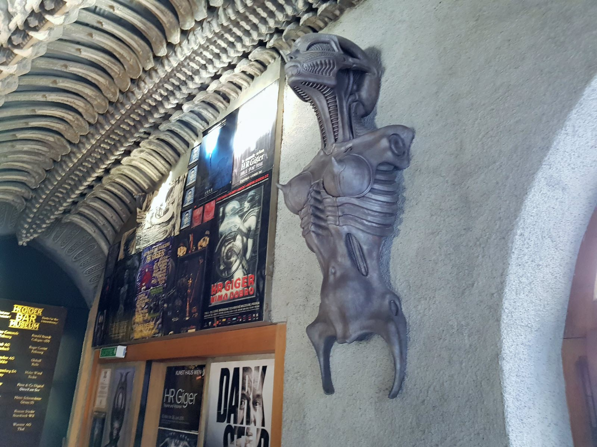
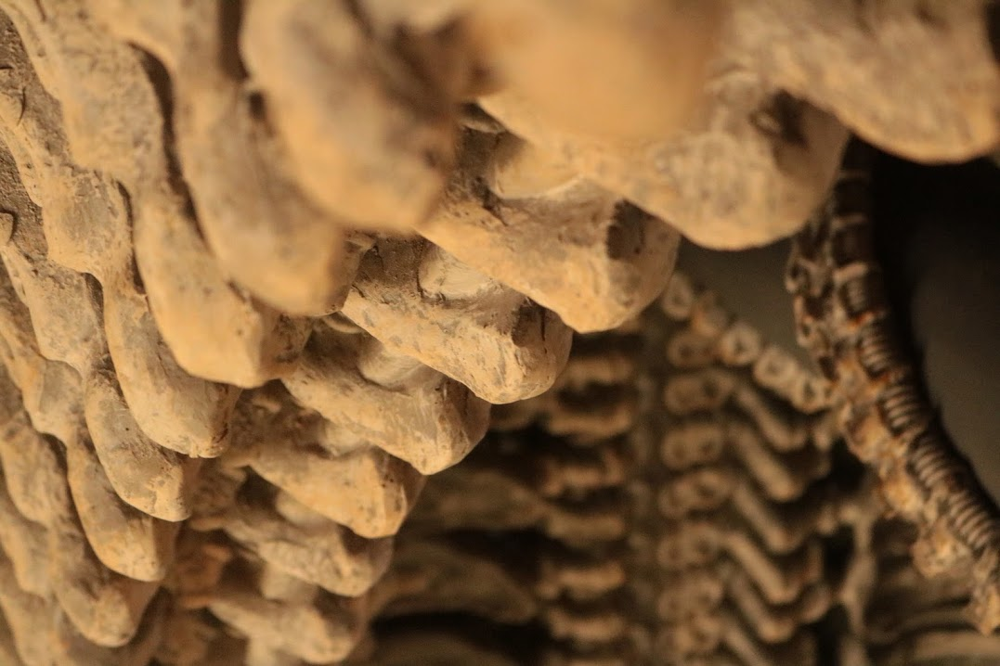
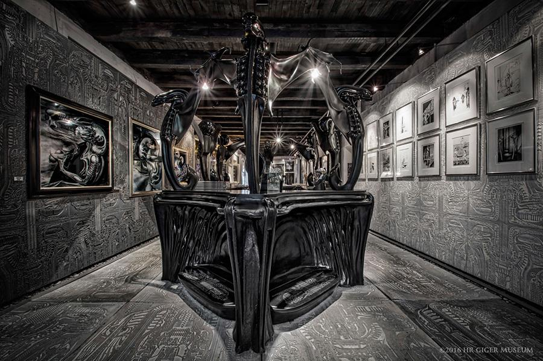
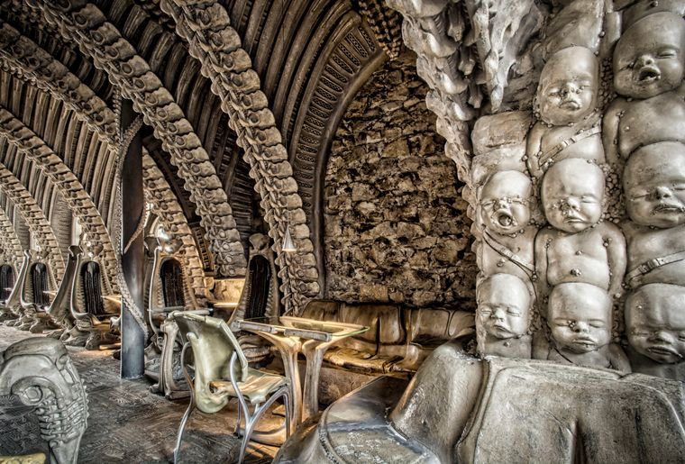
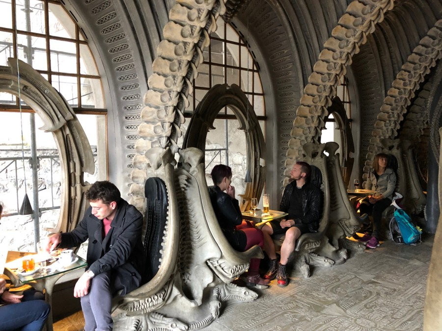
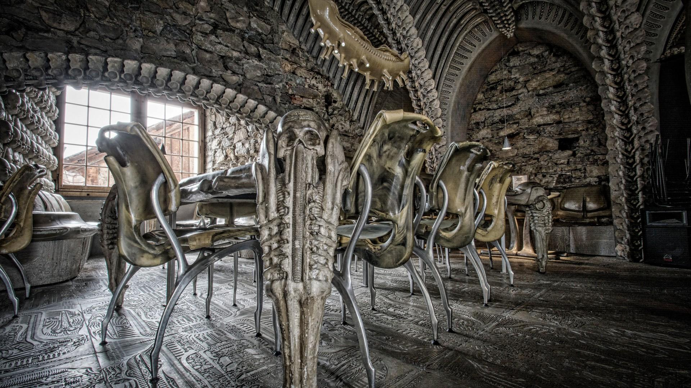

Description :
En 1990, Hans Ruedi Giger expose au château de Gruyères et « tombe amoureux » de cette cité médiévale, selon son épouse Carmen. Le couple acquiert un bâtiment de Gruyères en septembre 1997 pour 2 millions de francs suisses afin d'y ouvrir un musée le 20 juin 1981.
Le bar Giger est ouvert en face du musée en 2003.
Depuis 2003, le musée attire chaque année environ 35 000 visiteurs.
Collection :
Le musée HR Giger abrite 500 pièces capitales de l'œuvre de Giger, dont la série des « Spell », le cycle de « N. Y. City » et diverses références au cinéma, notamment au film Alien.
Site officiel du muséée H.R Gigger





